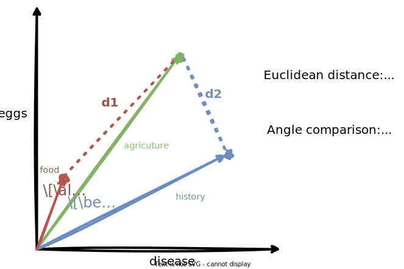

Vector Space Models¶
Vector space models are a way of representing the meaning of words in a document. They are a fundamental concept in NLP, and are used in many applications such as document classification, information retrieval, and question answering.
Introduction¶
Using vector space models, we can capture similarities, differences, dependencies or many other relationships between words.
Example
The following sentence have very similar words, but they have different meanings:
Where are you from?
Where are you going?
In contrast, the following sentences have very different words, but they have similar meanings:
What is your age?
How old are you?
Vector space models can be used to capture such similarities and differences between words.
Example
In the following sentence, the word cereal and the word spoon are related.
You eat cereal with a spoon.
In the following sentence, the word sell depends on the word buy.
You sell something to someone who buys it.
Vector space models help us to capture such and many other relationships between words.
John Firth, 1957
You shall know a word by the company it keeps.
This is one of the most fundamental concepts in NLP. When using vector space models, the way that representations are made is by identifying the context around each word in the text, which captures the relative meaning.
When learning these vectors, we usually make use of the neighboring words to extract meaning and information about the center word.
If we would cluster vectors together, we can observe that adjectives, nouns, verbs, etc. tend to be near to one another.
Question
In vector space models, synonyms and antonyms are very close to one another. Why do you think this is the case?
Co-Occurrence Matrix¶
The co-occurrence matrix is a matrix that counts the number of times that a word appears in the context of other words within a given window size \(k\).
From the co-occurrence matrix, we can extract the word vectors.
The vector representation of a word is called a word embedding.
We can use those word embeddings to find relationships between words.
In the following, we will look at two different approaches to create word embeddings.
Info
The terms word vector is often used interchangeably with word embedding. Both terms refer to a numerical representation of words in a continuous vector space.
Word by Word Design¶
In the word by word design, the co-occurrence matrix counts the number of times that a word appears in the context of other words within a given window size \(k\).
Example
Suppose we have the following two sentences:
I like simple data
I prefer simple raw data
With a window size of \(k=2\), the co-occurrence matrix would look as follows:
| I | like | prefer | simple | raw | data | |
|---|---|---|---|---|---|---|
| I | 0 | 1 | 1 | 2 | 0 | 0 |
| like | 1 | 0 | 0 | 1 | 0 | 1 |
| prefer | 1 | 0 | 0 | 1 | 1 | 0 |
| simple | 2 | 1 | 1 | 0 | 1 | 2 |
| raw | 0 | 0 | 1 | 1 | 0 | 1 |
| data | 0 | 1 | 0 | 2 | 1 | 0 |
If we look more closely at the word data, we can see that it appears in the context of the word simple twice, and in the context of the word and once, given a window size of \(k=2\).
So the word data can be represented as the following vector:
Note that the vector is of size \(n\), where \(n\) is the number of unique words in the vocabulary.
Note
The co-occurance matrix, as shown here, shows the unigram counts. Later in the course, we will also look at bigram counts, or n-gram counts in general, which allow us to capture more context. This concept is the basis for language models.
Word by Document Design¶
For a word by document design, the process is quite similar.
But instead of counting co-occurrences of words, we count the number of times that a word appears in documents of a specific category.
Example
Let's assume our corpus contains documents of three categories:
- entertainment
- economy
- machine learning
For the words data and movie, we could assume the following counts per category:
| entertainment | economy | machine learning | |
|---|---|---|---|
| data | 1000 | 4000 | 9000 |
| movie | 7500 | 2000 | 500 |
So the word data can be represented as the following vector:
And the word movie can be represented as the following vector:
Note that the vector is of size \(n\), where \(n\) is the number of categories.
We could visualize those vectors in a vector space as follows:
Note
For the sake of drawing, instead of using the categories as the axis and showing the word vectors, the figure shows the vectors of the categories.
However, we should see similar results if we would draw the word vectors in a three-dimensional vector space, using the categories as the axes (as you should usually do).
Eucledian Distance¶
The Euclidean distance between two vectors \(\mathbf{x}\) and \(\mathbf{y}\) in an n-dimensional space is defined as follows:
It is the straight line between two points in an n-dimensional space, and derived from the Pythagorean theorem.
We can also interpret it as the length of the vector that connects the two points (aka the norm of the vector).
Pythagoraen Theorem
In a right triangle, the square of the hypotenuse is equal to the sum of the squares of the other two sides.
Using the Euclidean distance, we can calculate how close two vectors are and thus, use it as a similarity metric.
Example
If we continue with the example from above, we can calculate the Euclidean distance between the machine learning category vector \(\mathbf{ml}\) and the entertainment category vector \(\mathbf{e}\) as follows:
Let the two vectors be:
Then the Euclidean distance is calculated as follows:
As you can see from the formula above, this generalizes to any number of dimensions.
Example
Let's assume we have the following co-oocurrence matrix, and we want to calculate the Euclidean distance between the words beer and pizza.
| data | beer | pizza | |
|---|---|---|---|
| AI | 6 | 0 | 1 |
| drinks | 0 | 4 | 6 |
| food | 0 | 6 | 8 |
Based on this co-occurrence matrix, we can represent the words beer and pizza as the following vectors:
Then the Euclidean distance is calculated as follows:
In Python, we can calculate the Euclidean distance using the numpy.linalg.norm function.
import numpy as np
# Define two vectors
a = np.array([1, 2, 3])
b = np.array([4, 5, 6])
# Calculate the Euclidean distance
distance = np.linalg.norm(a - b)
print("Euclidean distance:", distance)
Note
The numpy.linalg.norm function calculates the norm of a vector or matrix.
Since the norm of a vector is its length, the function can be used to calculate the Euclidean distance between two vectors.
Cosine Similarity¶
The cosine similarity is another way of measuring the similarity between two vectors.
The intuition is that vectors pointing in the similar direction share a similar proportion of words, and thus, are more similar to each other.
Let's take a look at the following figure:

Normally, the food and agriculture categories would be considered more similar, because they share a similar proportion of words.
However, the Euclidean distance would suggest that the agriculture and history categories are more similar to each other than the agriculture and food categories, since \(d_2 < d_1\).
This is because the Euclidean distance is biased towards longer vectors, or in our case, categories with more words.
To avoid that, we could also compare the angles, or the cosine of the angles, between the vectors to measure their similarity.
As the figure shows, the angle between the agriculture and food categories is smaller than the angle between the agriculture and history categories, and thus, would be a better measure of similarity in this case.
Info
When corpora are different in size, the Euclidean distance is biased towards longer vectors. In such cases, it is better to use the cosine similarity as a measure of similarity.
Note
Form the figure, we can see that:
- vectors pointing in the similar direction means their word frequencies are similar, and
- vectors pointing in different directions means the word frequencies are dissimilar.
Let's take a look at the math behind the cosine similarity.
The norm of a vector \(\mathbf{x}\), or its length, is defined as the square root of the sum of the squared vector elements:
The dot product of two vectors \(\mathbf{x}\) and \(\mathbf{y}\) is defined as the sum of the products of the corresponding vector elements:
From trigonometry, we know that the cosine of the angle is defined as follows:
In vector space,
- the adjacent is the dot product of the two vectors (the projection of one vector onto the other), and
- the hypotenuse is the product of the norms of the two vectors,
which leads us to the following formula:
The following figure shows how we can use the cosine similarity to measure the similarity between two vectors.
- If the vectors are orthogonal, like the vectors \(\mathbf{v}\) and \(\mathbf{w}\), the cosine similarity is 0, since \(\cos(90) = 0\).
- If the vectors point exactly in the same direction, like the vectors \(\mathbf{x}\) and \(\mathbf{y}\), the cosine similarity is 1, since \(\cos(0) = 1\).
Note
Since we are dealing with word counts, there won't be any negative values in the vectors, and our vectors will always point in the first quadrant.
Example
Given the following diagram
we can calculate the cosine similarity between the vectors for the categories agriculture \(\mathbf{a}\) and history \(\mathbf{h}\) as follows:
Let the two vectors be:
Then the cosine similarity is calculated as follows:
Example
Let's assume we have the following co-oocurrence matrix, and we want to calculate the cosine similarity between the words beer and pizza.
| data | beer | pizza | |
|---|---|---|---|
| AI | 6 | 0 | 1 |
| drinks | 0 | 4 | 6 |
| food | 0 | 6 | 8 |
Based on this co-occurrence matrix, we can represent the words beer and pizza as the following vectors:
Then the cosine similarity is calculated as follows:
Here is a NumPy implementation of the cosine similarity:
import numpy as np
# Define two vectors
a = np.array([1, 2, 3])
b = np.array([4, 5, 6])
# Calculate the cosine similarity
similarity = np.dot(a, b) / (np.linalg.norm(a) * np.linalg.norm(b))
print("Cosine similarity:", similarity)
Working with Word Vectors¶
We can use word vectors to find relationships between words.
Using simple vector arithmetics, we can already do some interesting things, like finding the capital of a country.
Knowing that the capital of Germany is Berlin, we can use this relationship to find the capital of the USA.
Question
If you were given the pair Australia and Sydney instead of Germany and Berlin, where do you think we would end up in the vector space for the USA?
Example
A similar analogy would be the following:
prince ü§¥ - male ‚ôÇÔ∏è + female ‚ôÄÔ∏è = princess üë∏
Suppose we have the following vector space, that has vector representations for countries and their capitals.
We can express the relationship between a country and its capital by the difference between their vectors.
Using this relationship, we can find the capital of a country by adding the difference vector to the vector of the country.
Usually, we do not end up exactly at the capital, so we need to utilize similarity metrics to find the closest vector.
As we learned, we could use the Euclidean distance or the cosine similarity to achieve this.
In the end, we can leverage known relationships between words to find unknown relationships and make predictions.
Example
Form the figure, we can see that
Given these vectors, we can derive that the relationship \(\mathbf{r}\) between Germany and its capital Berlin can be expressed by the difference between the two vectors:
So the relationship \(\mathbf{r}\) between country and capital can be expressed by the vector \([5, -1]\).
If we add this vector to the vector for the USA, we should end up close to the capital of the USA.
Now we can use the Euclidean distance or the cosine similarity to find the capital that is closest to the vector \(\mathbf{v}_{\text{dest}}\).
Looking at the figure, the capital that is closest to the vector \(\mathbf{v}_{\text{dest}}\) is Washington DC with \(\mathbf{v}_{\text{Washington DC}} = [9, 3]\).
Having words represented in a vector space allows us to capture relative meaning of words and find patterns in text. This is the basis for many advanced NLP tasks.
As you can imagine, similar words will have similar vectors, and thus, will be close to each other in the vector space.
Example
Given the word doctor, if we look at the words that are close to it in the vector space, we can see that they are probably all related to the medical field. For example: nurse, hospital, patient, medicine, etc.
We can also imagine that all countries will be close to each other, and all cities will be close to each other, or all animals will be close to each other, etc.
Also we can expect that sub groups like water animals, land animals, etc. will be grouped together.
Info
For a demo, please see the related notebook vector_space_models.ipynb.
Transforming Word Vectors¶
We can make use of vector transformations to build a simple translation system.
Example
Let's assume that in the english language, the word cat  üêà is represented by the vector
üêà is represented by the vector
And in the french language, the word chat  üêà is represented by the vector
üêà is represented by the vector
Then we want to find a transformation operation that transforms the english word vector \(\mathbf{v}_{\text{cat}}\) üêà into the french word vector \(\mathbf{v}_{\text{chat}}\) üêà.
The basic idea is that one vector space can be transformed into another vector space using a rotation matrix.
Example
If we have the english word vectors for cat, dog, and bird, and the french word vectors for chat, chien, and oiseau, we can find a rotation matrix that transforms the english word vectors into the french word vectors.
Mathematically, we want to minimize the distance between the dot product of the two matrices \(\mathbf{X} \mathbf{R}\) and the matrix \(\mathbf{Y}\).
We can find the rotation matrix \(\mathbf{R}\) by calculating a loss function that measures the difference between the dot product of the two matrices \(\mathbf{X} \mathbf{R}\) and the matrix \(\mathbf{Y}\).
- Initialize the rotation matrix \(\mathbf{R}\) with random values.
- Calculate the dot product of the two matrices \(\mathbf{X} \mathbf{R}\).
- Calculate the loss function by comparing the dot product of the two matrices \(\mathbf{X} \mathbf{R}\) and the matrix \(\mathbf{Y}\).
- Update the rotation matrix \(\mathbf{R}\) using gradient descent.
- Repeat steps 2-4 until the loss function is minimized.
Once we have the rotation matrix \(\mathbf{R}\), we can use it to transform the word vectors from one language into another. We will end up somewhere in the vector space of the other language, and then apply a similarity metric to find candidates for the translation.
Example
Let's assume we have the following three english word vectors:
And the following three equivalent french word vectors:
We can represent the english vectors as a matrix \(\mathbf{X}\) and the french vectors as matrix \(\mathbf{Y}\) as follows:
Now, we are lookng for a rotation matrix \(\mathbf{R}\) that transforms the word vectors \(\mathbf{v}_{\text{cat}}\), \(\mathbf{v}_{\text{dog}}\), and \(\mathbf{v}_{\text{bird}}\) into the word vectors \(\mathbf{v}_{\text{chat}}\), \(\mathbf{v}_{\text{chien}}\), and \(\mathbf{v}_{\text{oiseau}}\) such that:
Here is a NumPy implementation of such a transformation using numpy.dot:
>>> import numpy as np
>>> X = np.array([[1, 3, 4], [2, 2, 2], [3, 1, 0], [4, 2, 1], [5, 1, 3]])
>>> R = np.array([[1, 0, 0], [0, 1, 0], [0, 0, 1]])
>>> np.dot(X, R)
array([[1, 3, 4],
[2, 2, 2],
[3, 1, 0],
[4, 2, 1],
[5, 1, 3]])
Question
Why do we want to find a rotation matrix \(\mathbf{R}\) that transforms the english word vectors into the french word vectors, instead of just using a dictionary to translate the words?
Key Takeaways¶
- Vector space models are a way of representing the meaning of words in a document. They are a fundamental concept in NLP, and are used in many applications such as document classification, information retrieval, and question answering.
- Using vector space models, we can capture similarities, differences, dependencies or many other relationships between words.
- With vector space models, we can capture the relative meaning of words by identifying the context around each word in the text.
- Using the co-occurrence matrix, we can extract the word vectors. The vector representation of a word is called a word embedding.
- In this lecture, we learned two different approaches to create word embeddings: the word by word design and the word by document design.
- When we have word vectors available, we can use a similarity metric like the Euclidean distance or the cosine similarity to measure the similarity between vectors.
- Using simple vector arithmetics, we can put word vectors into relation with each other and find interesting relationships between words.
- Translation can be done by finding a rotation matrix that transforms the word vectors from one language into another.
- Understanding the concept of vector space models is the basis for many advanced NLP tasks.